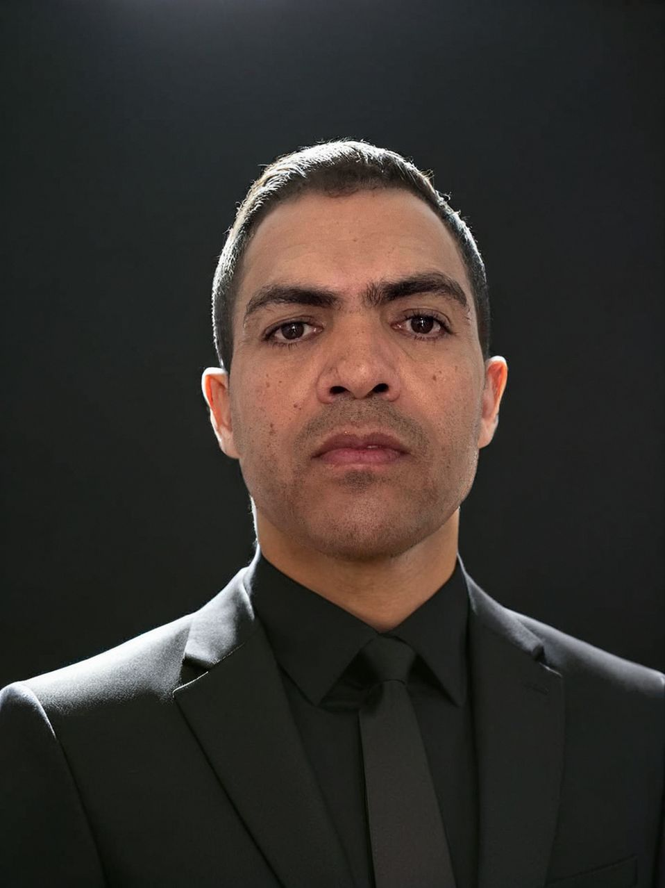

18+ years of professional experience merging engineering precision with modern software development.
A professional career is not linear; it branches into bifurcations that demand a systemic vision. Before me, a new path has emerged: initially complex and challenging, yet undeniably superior in its purpose.
"I will follow the path of my predecessors, but if I find a shorter and flatter one, I will trailblaze it." — Seneca